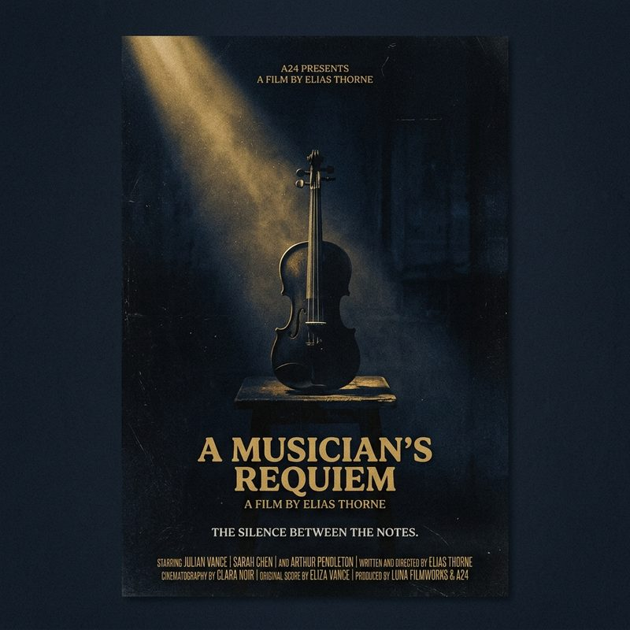

A comprehensive look into securing funding, understanding co-production treaties, and maximizing returns for localized cinematic projects in emerging SEA markets.
The Changing Investment Landscape
South East Asia has traditionally been viewed by Western studios as merely a beautiful, cost-effective backdrop for their productions. However, a massive shift has occurred in the last five years. Local audiences are hungry for premium content that reflects their own narratives, and global streaming platforms are aggressively competing for these regional subscribers.
This has created an unprecedented opportunity for local producers. The challenge is no longer just finding the money; it lies in structuring deals that protect your intellectual property while providing realistic ROI for investors who might be new to the unpredictable nature of entertainment finance.
"In film finance, predictability is an illusion, but mitigated risk is achievable through rigorous strategic planning and international partnerships."
Structuring Co-Productions
One of the most effective ways to fund medium-to-large budget independent projects locally is through international co-productions. By partnering across borders—say, Indonesia and Singapore—you can access a broader pool of government grants, tax incentives, and distribution networks.
When we built the financial framework for our recent features, we relied heavily on presale agreements and soft money strategies. This means securing distribution minimum guarantees before rolling cameras, which significantly de-risks the equity investment for our private backers. It requires relentless pitching and a deep understanding of what different territorial buyers are looking for in terms of genre and cast.
Moving Forward
The future of SEA cinema is incredibly bright, but it requires producers to treat their films as comprehensive business ventures rather than just passion projects. Mastering the business side of the craft is the only way to ensure creative freedom in the long run.